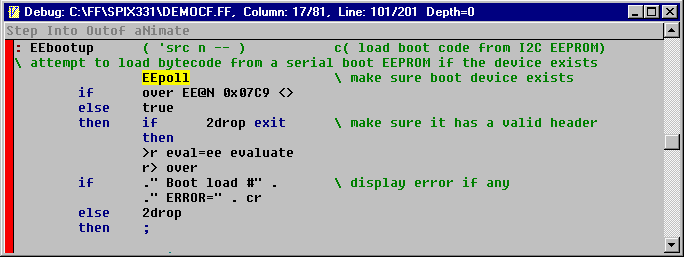

High Level Debugger
The high level debugger single steps through a source file using TESTING mode. As you step through code, you can watch the contents of both stacks on the console window. The next word to be executed is highlighted in yellow. It must be in the search order, or you'll get an error. Also, if you're stepping a hex number, the PC's base must be HEX (press ctrl-X). You can set the current pointer by clicking on the starting point or by using the left/right cursor keys.
The button opens the debugger using the current file. BUG also invokes the debugger. It connects to the target board, enters TESTING mode, opens the source file and positions the cursor at the desired word. Example: BUG FOO.
| Table HD1. Key usage | |
| F1 | Help screen |
| Space | Step one instruction |
| I | Into: Step into highlighted instruction |
| O | Outof: Exit current nesting level |
| N | aNimate: step until key is pressed |
| ctrl-C | Copy file to clipboard |
| ESC | Close window |
Sample window.

HIBUG.G is the source code for this debugger. When the high level debugger opens a file, it parses it to build a list of valid keywords. Black words execute on the target. Blue words execute on the host PC, simulating what the target would do to the instruction pointer and stacks. You can reposition the pointer by clicking on a word. If you like to click on a window to bring it into focus, make a habit of clicking on the title bar or some other inactive region so you don't inadvertently reposition the cursor (instruction pointer).